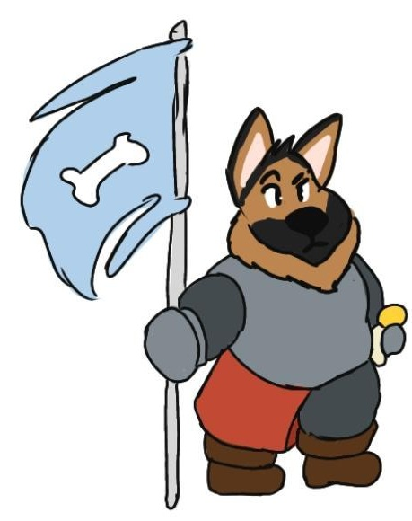
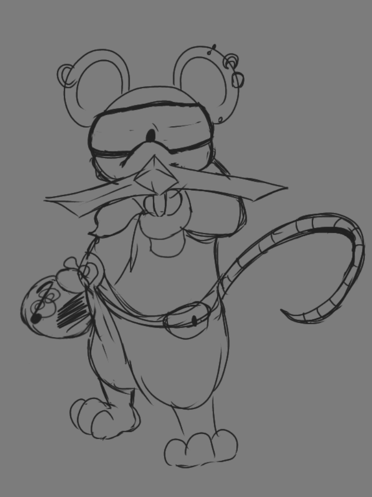

Conheça a Vanguarda da Aurora!

Foracio
Nascido em uma familia de ferreiros na cidade real de Olter, Foracio desenvolveu suas habilidades de luta com seu pai. Por sua habilidade nata com diversos estilos de combate, Foracio se destacou e se tornou um dos melhores guerreiros da região. Forácio também possui um bom coração e sempre olha por seus companheiros de viagem para protegê-los.

Lin Vin
Herdeiro de um clã feiticeiro do reino de Zurich, Lin Vin cresceu com o fardo de assumir o lugar do pai, competindo com os irmãos na linha de sucessão. Para obter poder, embarcou em uma jornada de descoberta e aprendizado, onde conheceu Forácio. Lin Vin tende a ser arrogante e esquivo. Até mesmo Forácio tem dificuldades para lidar e entender o feiticeiro.

Roberswaldo
Criado nas favelas do reino, Robervaldo sempre teve o sonho de melhorar a vida das pessoas em que ele é próximo, desde cedo agia como um lider para as crianças mais novas, ensinando elas a sobreviverem naquele local pútrido.

Ursula
Descrição da Ursula.

Mr. Pu Terrier
Herdeiro do famoso bar Patamarsa, desde cedo foi criado para ser o melhor barman do planeta, sempre gostou da negocio da família, mas devido a péssima gerencia de seu Pai, o bar acabou tendo seu nome arruinado.